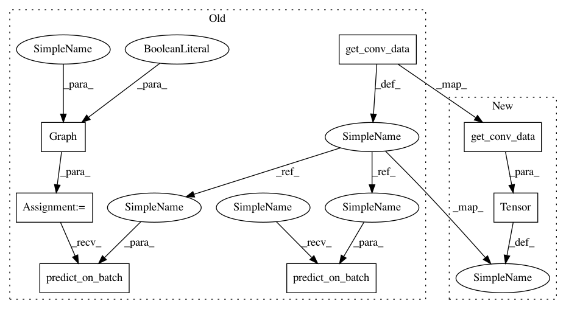

f4503bb3a3be014b452f54d8e2d187bb6419f627,tests/test_graph.py,,test_dense_wider,#,88
Before Change
def test_dense_wider():
model = get_add_skip_model()
graph = Graph(model, True)
graph.to_wider_model(19, 3)
new_model = graph.produce_model()
input_data = get_conv_data()
output1 = model.predict_on_batch(input_data).flatten()
output2 = new_model.predict_on_batch(input_data).flatten()
assert np.sum(np.abs(output1 - output2)) < 1e-4
After Change
graph = deepcopy(graph)
graph.to_wider_model(26, 3)
new_model = graph.produce_model()
input_data = torch.Tensor(get_conv_data())
model.eval()
new_model.eval()
In pattern: SUPERPATTERN
Frequency: 4
Non-data size: 7
Instances
Project Name: keras-team/autokeras
Commit Name: f4503bb3a3be014b452f54d8e2d187bb6419f627
Time: 2018-08-01
Author: jhfjhfj1@gmail.com
File Name: tests/test_graph.py
Class Name:
Method Name: test_dense_wider
Project Name: keras-team/autokeras
Commit Name: f4503bb3a3be014b452f54d8e2d187bb6419f627
Time: 2018-08-01
Author: jhfjhfj1@gmail.com
File Name: tests/test_graph.py
Class Name:
Method Name: test_conv_wider
Project Name: keras-team/autokeras
Commit Name: f4503bb3a3be014b452f54d8e2d187bb6419f627
Time: 2018-08-01
Author: jhfjhfj1@gmail.com
File Name: tests/test_graph.py
Class Name:
Method Name: test_skip_add_over_pooling
Project Name: keras-team/autokeras
Commit Name: f4503bb3a3be014b452f54d8e2d187bb6419f627
Time: 2018-08-01
Author: jhfjhfj1@gmail.com
File Name: tests/test_graph.py
Class Name:
Method Name: test_dense_deeper